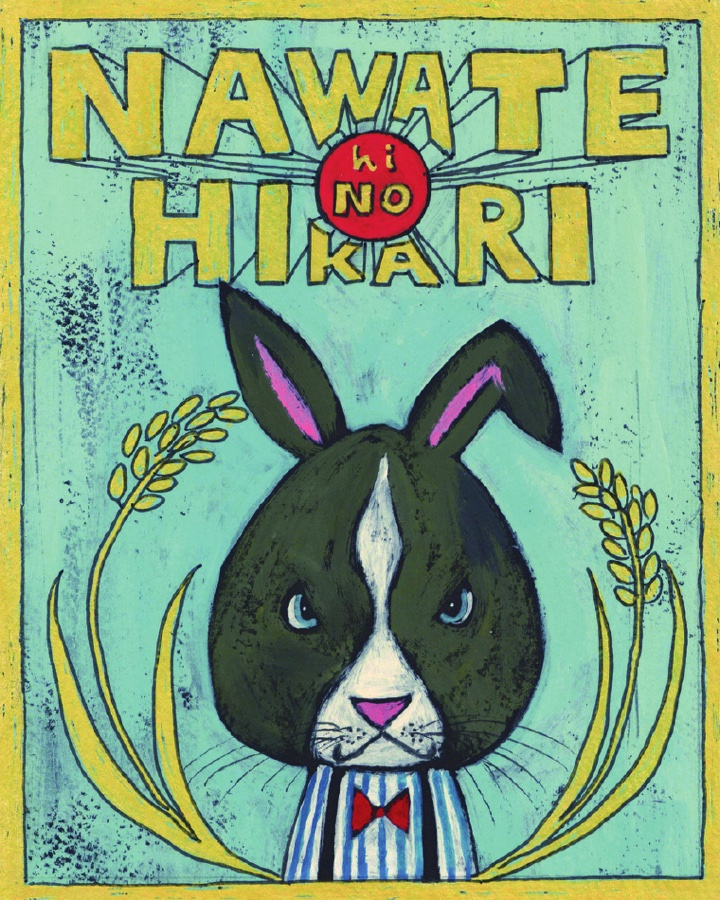
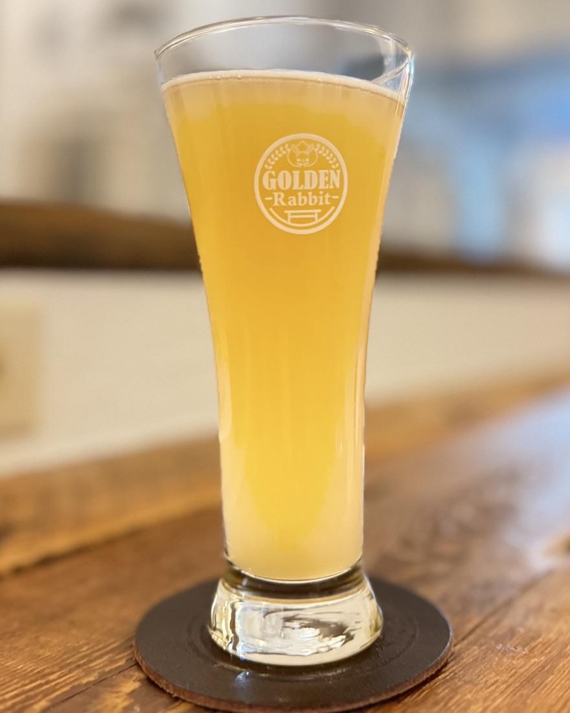
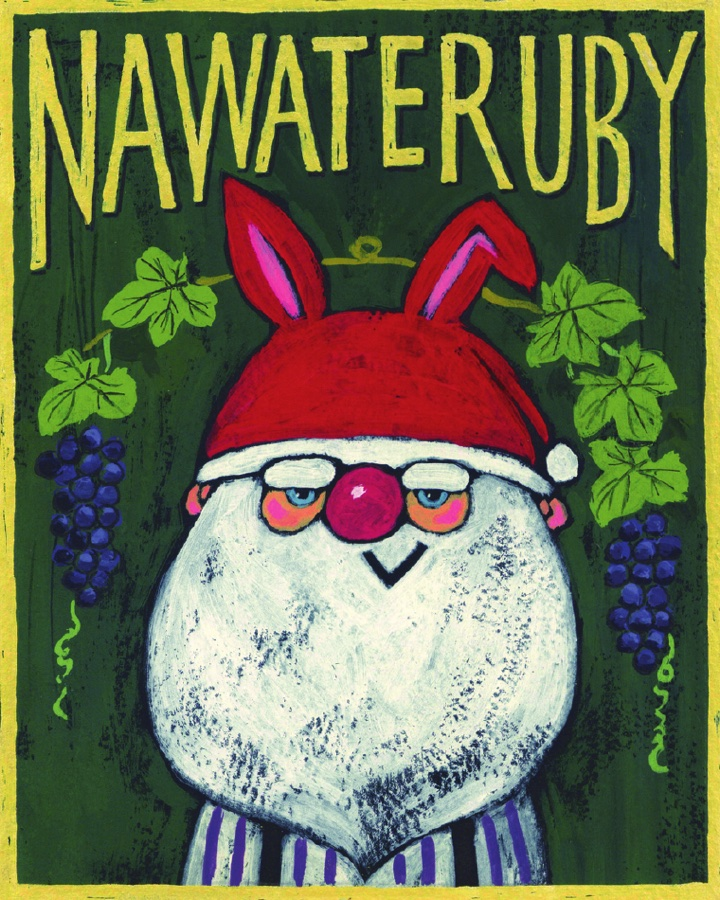
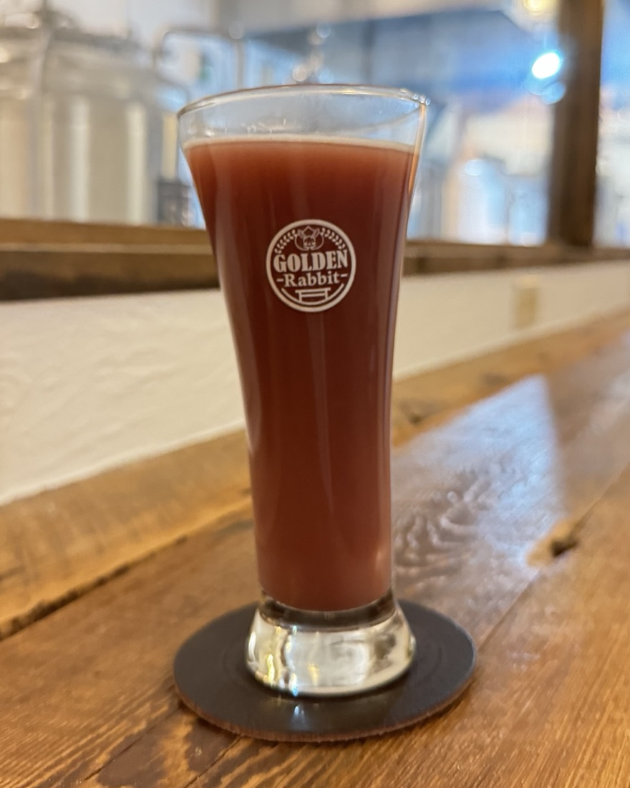
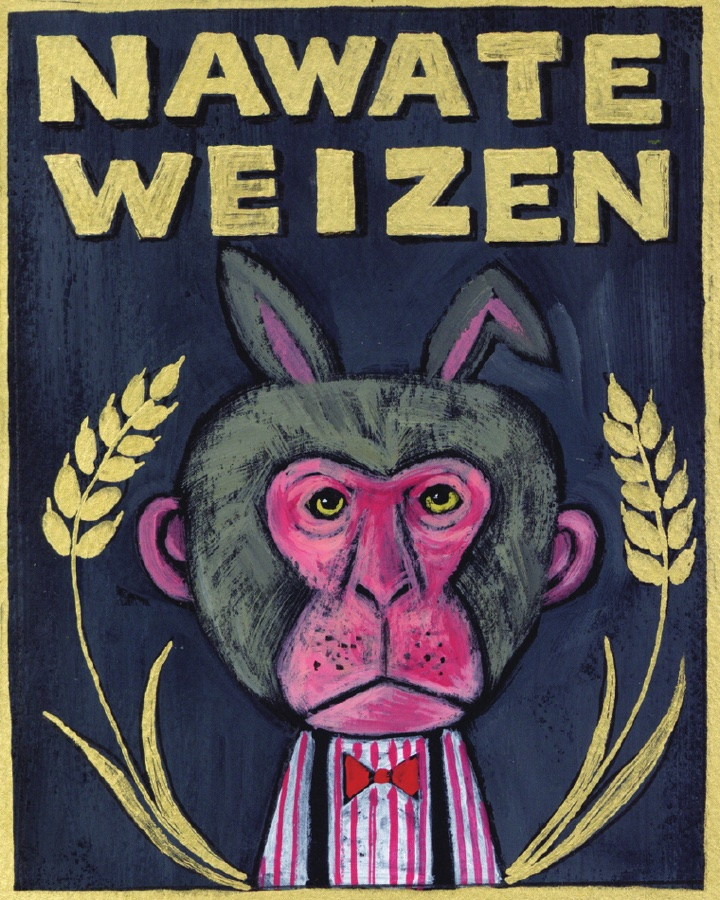
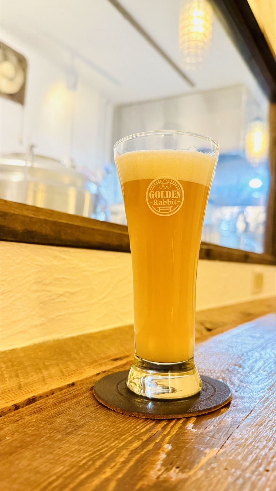

OPENING DAYS
オープン日にお出しする、三つのビール
10月17日（土）15:00〜21:00 ／ 18日（日）11:00〜21:00
ラベルの絵は、絵本作家・谷口智則さんがこのビールのために描いてくださったものです。
NAWATE HINOHIKARI
畷ひのひかり
発泡酒（ライスラガー）


四條畷産のお米「ひのひかり」を使った、この醸造所で初めて仕込んだビールです。すっきりしたキレと、お米のやさしい旨みをお楽しみください。
- 原材料
- 麦芽（国内製造および外国製造）、米（四條畷産）、ホップ、米麹
- アルコール分
- 5.5%
- 内容量
- 330ml（瓶）
NAWATE RUBY
畷ルビー
発泡酒（フルーツエール）


四條畷産のマスカット・ベーリーAを使った葡萄のビールです。赤ワインを思わせる、華やかで濃い葡萄の香りをお楽しみください。
- 原材料
- 麦芽（国内製造および外国製造）、葡萄果汁（四條畷産）、葡萄（四條畷産）、ラクトース、ホップ
- アルコール分
- 5%
- 内容量
- 330ml（瓶）
NAWATE WEIZEN
畷ヴァイツェン
発泡酒（ヴァイツェン）


四條畷産の小麦を使ったヴァイツェンです。バナナのような華やかな香りと、やわらかな口当たりをお楽しみください。
- 原材料
- 麦芽（国内製造および外国製造）、小麦（四條畷市産）、ホップ、米麹
- アルコール分
- 5%
- 内容量
- 330ml（瓶）
INSTAGRAM CAMPAIGN
ラベルと同じ絵のステッカーを、プレゼント
オープンの2日間、ビールやお店の様子をInstagramに投稿してくださった方へ、感謝をこめて、お買い上げのビールと同じ絵のステッカーを一枚お渡しします。各種500枚限定（なくなり次第終了）。対象は、店舗でお買い上げの瓶ビールのみです。お渡しは店舗のみです。
- 01@goldenrabbitbeer.shijonawate をフォロー
- 02ビールやお店の写真・動画を投稿（フィード・リール・ストーリーズ どれでも）。@goldenrabbitbeer.shijonawate をタグ付けしてください
- 03店舗のスタッフに投稿画面をお見せください